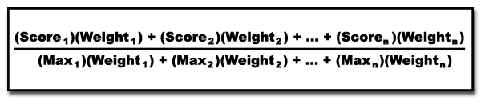
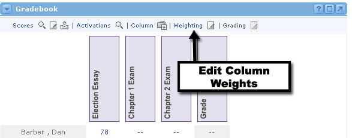
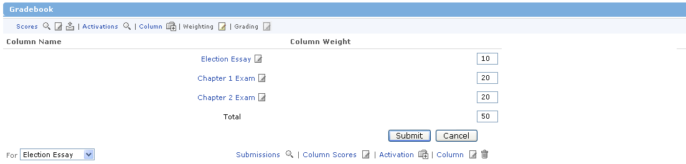

Here's the formula for calculating the final grade:

|
Here it is in clearer language. First, you multiply a user's Score in the first column by the Weight assigned to that column. Repeat this for all columns. Then add all of those products together and call this number X. Now, find the Maximum Possible Score in the first column and multiply it by the Weight assigned to that column. Repeat this for all columns. Then add all of those products together and call this number Y. Finally, divide X by Y to get the user's Grade in the offering. |
Editing All Column Weights |

To edit the column weights in the Gradebook, follow these steps:
